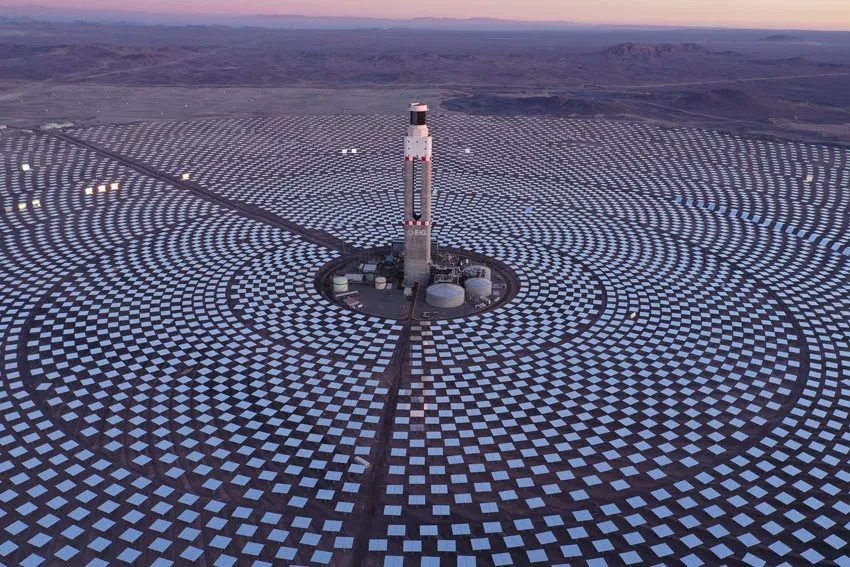

0. Introducción al curso
Contents
MEC501 - Manejo y Conversión de Energía Solar Térmica
0. Introducción al curso#
Profesor: Francisco Ramírez Cuevas
Fecha: 1 de Agosto 2022
Tabla de contenidos
Situación actual del sistema energético#
from IPython.display import display, HTML, IFrame
display(IFrame('https://ourworldindata.org/grapher/energy-consumption-by-source-and-region?stackMode=absolute', '900px', '600px'))
Datos relevantes
El consumo mundial de combustibles fósiles (petróleo, gas y carbón) a aumentado en casi 65% desde el año 1990 hasta el año 2021.
El porcentaje de energía proveniente de combustibles fósiles, ha disminuido de casi un 87% en 1990 a 83% en el 2021 (en Chile, este porcentaje cayó desde 82% a 76.5%).
Actualmente en Chile, las energías renovables representan un 23.5%, donde un 6.25% proviene de energía solar.
Por otro lado, la disponiblidad de combustilbes fósiles es limitada. Segun estudios ´las reservas de petroleo, gas y carbón se agotarán para los años 2052, 2060 y 2090, respectivamente.
Esto significa que los precios de los combustibles fósiles seguirán aumentando en las próximas décadas.
Problemas medioambientales asociados al sistema energético actual#
Como vimos, aunque el consumo de energías renovables ha ido en aumento, la quema de combustibles fósiles sigue siendo la principal fuente de energía en el mundo.
Además de los problemas asociados a la disponibilidad limitada y aumento de precio de los combustibles fósiles, existen consecuencias medioambientales que tienen asociado un costo indirecto, tales como:
Lluvia ácida asociada a la emisión de SO\(_2\) y NO\(_x\)
Disminución de la capa de ozono por emisión de CFC y NO\(_x\). (Aunque se han tomado una serie de medidas para reducir las emisiones de CFC, se estima que el daño en zonas como la Antartica seguirá presenta hasta, al menos, el año 2075.)
Cambio climático producto del aumento de gases de efecto invernadero
Tecnologías de manejo y conversión de energía solar#
Aspectos generales de la energía solar#
El sol es la única fuente externa de energía en la tierra
Todas la formas de energía disponibles tiene origen solar (combustibles fósiles, mareomotríz, eólica, etc)
Disponibilidad de energía solar#
display(IFrame('https://globalsolaratlas.info/','100%','600px'))
Chile es el país con mayores niveles de radiación en el mundo.
Por ejemplo, en base al atlas solar del World Bank Group, si calculamos la energía generada por el área con mayores niveles de radiación considerando paneles con potencia máxima de 500 Wp
A = 250060.15 # Superficie total (km^2)
Pmax = 500 # Potencia máxima por panel en condiciones estándard (Wp)
PVOUT = 6.0 # Potencía específica suministrada (kWh/Wp)
# Energía total suministrada (TWh)
Etot = A*1E3**2*PVOUT*Pmax/1E12
print("Energía eléctrica suministrada: %.1f TWh (Energía consumida en Chile 444 TWh)" % Etot)
Energía eléctrica suministrada: 750.2 TWh (Energía consumida en Chile 444 TWh)
“Para abastecer toda la energía que requiere Chile si tuviéramos almacenamiento suficiente necesitamos unos mil kilómetros cuadrados, algo menos que el 1% del desierto y equivalente más o menos a la superficie de la comuna de Melipilla.” Rodrigo Palma, director de SERC, 2022
Descripción de tecnologías para energía solar#
Fotovoltaica

Termosolar

Termoregulación solar para edificaciones

Desalinización solar

Combustibles solares (ejemplos)
Generación fotoelectroquímica

Generación termoquímica

Tecnologías en base a energía solar en Chile#
En Chile las principales tecnologías son la fotovoltaica y termosolar, con una capacidad instalada de 4.6 GW. La mayor parte de este simunistro corresponde a plantas solares fotovoltaicas. Respecto al suministro de energía termosolar, se destacan dos proyectos:
{kind=link}
Concentrador solar parabolico en Valparaiso

Descripción general de la asignatura#
En este curso revisaremos los fundamentos y aplicaciones de tecnologías para el manejo y conversión de la energía solar. La primera parte de este curso estará enfocada hacia los fundamentos de la radiación solar. Analizaremos el fenómeno electromagnético de la radiación y su interacción con la materia para explicar los mecanismos detrás de la respuesta óptica en diversos escenarios.
En la segunda parte revisaremos las principales tecnologías de conversión y manejo de energía solar. Comenzaremos analizando colectores solares aplicados a sistemas de agua caliente en sectores residenciales. Debido a la simpleza en su diseño, el análisis de estos sistemas servirá como plataforma para aplicar y reforzar los conceptos aprendidos en la primera parte. Luego, revisaremos centrales termosolares, celdas fotovoltaicas, manejo de la radiación solar en edificaciones, y otras tecnologías aún en desarrollo como desalinización y combustibles solares.
Objetivos generales#
Aprender los fundamentos del manejo de la radiación térmica y solar, así como sobre las principales tecnologías de conversión y manejo de energía solar
Objetivos específicos#
Entender la radiación como un fenómeno electromagnético
Entender la interacción materia-luz y su relación con la respuesta óptica de los materiales
Comprender los régimenes de análisis para el transporte radiativo en función de la longitud de escala.
Familiarizar al estudiante con las herramientas de modelación de transporte radiativo.
Comprender los fundamentos de la transferencia de calor por radiación.
Entender las principales características de la radiación solar.
Capacitar al estudiante en el diseño de sistemas de agua caliente domiciliarios basados en colectores solares.
Familiarizar al estudiante con las principales tecnologías de manejo y conversión de energía solar.
Familiarizar al estudiante con las tecnologías de manejo y conversión de energía solar emergentes, y el rol de la nanofotónica en el futuro de estas tecnologías.
Temario#
Contenidos#
La radiación como un fenómeno electromagnético
Interacción materia-luz
Dispersión (scattering) de la luz y transporte radiativo
Fundamentos de la transferencia de calor por radiación
Radiación Solar
Colectores planos para sistemas de agua caliente termosolar
Plantas termosolares
Celdas fotovoltaicas
Tecnologías de termorregulación solar para edificaciones
Sistemas de desalinización Solar
Dispositivos de conversión de combustibles solares
Evaluación de la asignatura#
Tres (3) pruebas en formato de tareas (80% de nota de presentación)
Cuestionarios al comienzo de cada clase (20% de la nota de presentación)
*El promedio de cuestionarios considera 8 de las mejores notas.
Aquellos alumnos con \(\mathrm{NP} \geq 5.0\) no requieren rendir examen. En caso de rendir el examen, la calificación de este reemplaza la peor nota de las pruebas parciales (solo si la nota del exámen es superior a la peor nota). La nota final se calcula mediante el promedio de las 3 mejores notas (incluido examen).